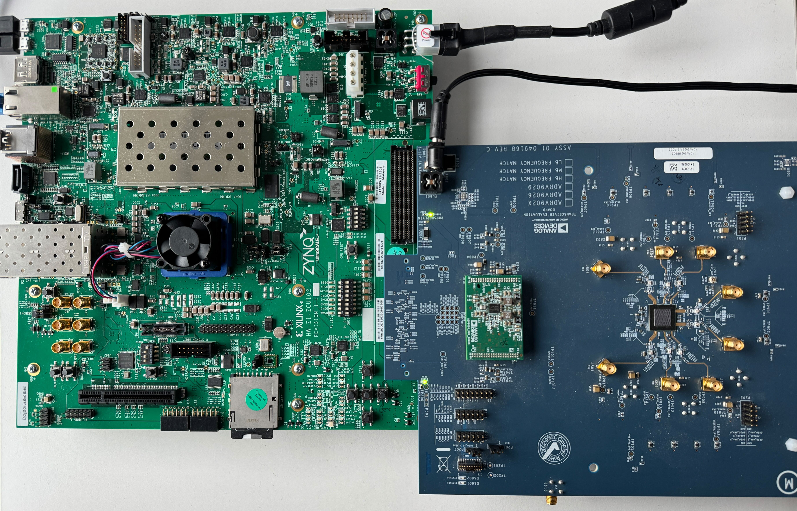

ZCU102 Quickstart
{kind=link}
This guide provides some quick instructions on how to setup the EVAL-ADRV9026/ADRV9029 on:
Instructions on how to build the ZynqMP / MPSoC Linux kernel and devicetrees from source can be found here:
Required Software
SD Card 16GB imaged with Kuiper Linux (see SD Card flashing)
A UART terminal (Putty/Tera Term/Minicom, etc.), Baud rate 115200 (8N1).
Required Hardware
AMD Xilinx ZCU102 Rev 1.0 board
EVAL-ADRV9026/ADRV9029 FMC board.
Micro-USB cable
Ethernet cable
Optionally USB keyboard mouse and a Display Port compatible monitor
Testing

Connect the EVAL-ADRV9026/ADRV9029 FMC board to the FPGA carrier HPC1 FMC1 socket.
Connect USB UART J83 (Micro USB) to your host PC.
Insert SD card into socket.
Configure ZCU102 for SD BOOT (mode SW6[4:1] switch in the position OFF,OFF,OFF,ON as seen in the below picture).
Turn on the power switch on the FPGA board.
Observe kernel and serial console messages on your terminal. (use the first ttyUSB or COM port registered)
{kind=link}
All the products described on this page include ESD (electrostatic discharge) sensitive devices. Electrostatic charges as high as 4000V readily accumulate on the human body or test equipment and can discharge without detection. Although the boards feature ESD protection circuitry, permanent damage may occur on devices subjected to high-energy electrostatic discharges. Therefore, proper ESD precautions are recommended to avoid performance degradation or loss of functionality. This includes removing static charge on external equipment, cables, or antennas before connecting to the device.
Console Output
Xilinx Zynq MP First Stage Boot Loader
Release 2022.2 Jan 22 2024 - 09:52:25
NOTICE: BL31: Non secure code at 0x8000000
NOTICE: BL31: v2.8(release):xilinx-v2023.1
NOTICE: BL31: Built : 11:07:44, Jul 25 2023
PMUFW: v1.1
U-Boot 2018.01-21441-ga6ab387 (Aug 31 2022 - 11:47:19 +0100) Xilinx ZynqMP ZCU102 revA, Build: jenkins-development-build_uboot-2
I2C: ready
DRAM: 4 GiB
EL Level: EL2
Chip ID: zu9eg
MMC: sdhci@ff170000: 0 (SD)
*** Warning - bad CRC, using default environment
In: serial@ff000000
Out: serial@ff000000
Err: serial@ff000000
Bootmode: LVL_SHFT_SD_MODE1
Net: ZYNQ GEM: ff0e0000, phyaddr 15, interface rgmii-id
Warning: ethernet@ff0e0000 (eth0) using random MAC address - 2a:3e:1f:45:54:1b
eth0: ethernet@ff0e0000
Hit any key to stop autoboot: 0
switch to partitions #0, OK
mmc0 is current device
Device: sdhci@ff170000
Manufacturer ID: 27
OEM: 5048
Name: SD32G
Tran Speed: 50000000
Rd Block Len: 512
SD version 3.0
High Capacity: Yes
Capacity: 28.8 GiB
Bus Width: 4-bit
Erase Group Size: 512 Bytes
reading uEnv.txt
407 bytes read in 20 ms (19.5 KiB/s)
Loaded environment from uEnv.txt
Importing environment from SD ...
Running uenvcmd ...
Copying Linux from SD to RAM...
** No boot file defined **
reading system.dtb
45793 bytes read in 28 ms (1.6 MiB/s)
reading Image
38265344 bytes read in 2528 ms (14.4 MiB/s)
## Flattened Device Tree blob at 04000000
Booting using the fdt blob at 0x4000000
Loading Device Tree to 000000000fff1000, end 000000000ffff2e0 ... OK
Starting kernel ...
[ 0.000000] Booting Linux on physical CPU 0x0000000000 [0x410fd034]
[ 0.000000] Linux version 6.1.0-271228-g2fc1c82db9d8 (dragos@debian) (aarch64-none-linux-gnu-gcc (GNU Toolchain for the A-profile Architecture 10.3-2021.07 (arm-10.29)) 10.3.1 20210621, GNU ld (GNU Toolchain for the A-profile Architecture 10.3-2021.07 (arm-10.29)) 2.36.1.20210621) #211 SMP Mon Jan 22 10:40:40 EET 2024
[ 0.000000] Machine model: ZynqMP ZCU102 Rev1.0
[ 0.000000] earlycon: cdns0 at MMIO 0x00000000ff000000 (options '115200n8')
[ 0.000000] printk: bootconsole [cdns0] enabled
[ 0.000000] efi: UEFI not found.
[ 0.000000] Zone ranges:
[ 0.000000] DMA [mem 0x0000000000000000-0x00000000ffffffff]
[ 0.000000] DMA32 empty
[ 0.000000] Normal [mem 0x0000000100000000-0x000000087fffffff]
[ 0.000000] Movable zone start for each node
[ 0.000000] Early memory node ranges
[ 0.000000] node 0: [mem 0x0000000000000000-0x000000007fffffff]
[ 0.000000] node 0: [mem 0x0000000800000000-0x000000087fffffff]
[ 0.000000] Initmem setup node 0 [mem 0x0000000000000000-0x000000087fffffff]
[ 0.000000] cma: Reserved 256 MiB at 0x0000000070000000
[ 0.000000] psci: probing for conduit method from DT.
[ 0.000000] psci: PSCIv1.1 detected in firmware.
[ 0.000000] psci: Using standard PSCI v0.2 function IDs
[ 0.000000] psci: MIGRATE_INFO_TYPE not supported.
[ 0.000000] psci: SMC Calling Convention v1.2
[ 0.000000] percpu: Embedded 18 pages/cpu s34536 r8192 d31000 u73728
[ 0.000000] Detected VIPT I-cache on CPU0
[ 0.000000] CPU features: detected: ARM erratum 845719
[ 0.000000] alternatives: applying boot alternatives
[ 0.000000] Built 1 zonelists, mobility grouping on. Total pages: 1034240
[ 0.000000] Kernel command line: console=ttyPS0,115200 root=/dev/mmcblk0p2 rw earlycon rootfstype=ext4 rootwait clk_ignore_unused cpuidle.off=1 root=/dev/mmcblk0p2 rw rootwait
[ 0.000000] Dentry cache hash table entries: 524288 (order: 10, 4194304 bytes, linear)
[ 0.000000] Inode-cache hash table entries: 262144 (order: 9, 2097152 bytes, linear)
[ 0.000000] mem auto-init: stack:off, heap alloc:off, heap free:off
[ 0.000000] software IO TLB: area num 4.
[ 0.000000] software IO TLB: mapped [mem 0x000000006c000000-0x0000000070000000] (64MB)
[ 0.000000] Memory: 3755488K/4194304K available (17408K kernel code, 1720K rwdata, 15436K rodata, 2688K init, 658K bss, 176672K reserved, 262144K cma-reserved)
[ 0.000000] rcu: Hierarchical RCU implementation.
[ 0.000000] rcu: RCU event tracing is enabled.
[ 0.000000] rcu: RCU restricting CPUs from NR_CPUS=8 to nr_cpu_ids=4.
[ 0.000000] rcu: RCU calculated value of scheduler-enlistment delay is 25 jiffies.
[ 0.000000] rcu: Adjusting geometry for rcu_fanout_leaf=16, nr_cpu_ids=4
[ 0.000000] NR_IRQS: 64, nr_irqs: 64, preallocated irqs: 0
[ 0.000000] GIC: Adjusting CPU interface base to 0x00000000f902f000
[ 0.000000] Root IRQ handler: gic_handle_irq
[ 0.000000] GIC: Using split EOI/Deactivate mode
[ 0.000000] rcu: srcu_init: Setting srcu_struct sizes based on contention.
[ 0.000000] arch_timer: cp15 timer(s) running at 100.00MHz (phys).
[ 0.000000] clocksource: arch_sys_counter: mask: 0x1ffffffffffffff max_cycles: 0x171024e7e0, max_idle_ns: 440795205315 ns
[ 0.000000] sched_clock: 57 bits at 100MHz, resolution 10ns, wraps every 4398046511100ns
[ 0.008416] Console: colour dummy device 80x25
[ 0.012485] Calibrating delay loop (skipped), value calculated using timer frequency.. 200.00 BogoMIPS (lpj=400000)
[ 0.022839] pid_max: default: 32768 minimum: 301
[ 0.027571] Mount-cache hash table entries: 8192 (order: 4, 65536 bytes, linear)
[ 0.034787] Mountpoint-cache hash table entries: 8192 (order: 4, 65536 bytes, linear)
[ 0.043515] rcu: Hierarchical SRCU implementation.
[ 0.047321] rcu: Max phase no-delay instances is 1000.
[ 0.052752] EFI services will not be available.
[ 0.057162] smp: Bringing up secondary CPUs ...
[ 0.061895] Detected VIPT I-cache on CPU1
[ 0.061969] CPU1: Booted secondary processor 0x0000000001 [0x410fd034]
[ 0.062371] Detected VIPT I-cache on CPU2
[ 0.062425] CPU2: Booted secondary processor 0x0000000002 [0x410fd034]
[ 0.062808] Detected VIPT I-cache on CPU3
[ 0.062863] CPU3: Booted secondary processor 0x0000000003 [0x410fd034]
[ 0.062909] smp: Brought up 1 node, 4 CPUs
[ 0.096969] SMP: Total of 4 processors activated.
[ 0.101641] CPU features: detected: 32-bit EL0 Support
[ 0.106744] CPU features: detected: CRC32 instructions
[ 0.111901] CPU: All CPU(s) started at EL2
[ 0.115914] alternatives: applying system-wide alternatives
[ 0.122489] devtmpfs: initialized
[ 0.130195] Registered cp15_barrier emulation handler
[ 0.130247] Registered setend emulation handler
[ 0.134358] clocksource: jiffies: mask: 0xffffffff max_cycles: 0xffffffff, max_idle_ns: 7645041785100000 ns
[ 0.143951] futex hash table entries: 1024 (order: 4, 65536 bytes, linear)
[ 0.156773] pinctrl core: initialized pinctrl subsystem
[ 0.157678] NET: Registered PF_NETLINK/PF_ROUTE protocol family
[ 0.163102] DMA: preallocated 512 KiB GFP_KERNEL pool for atomic allocations
[ 0.169350] DMA: preallocated 512 KiB GFP_KERNEL|GFP_DMA pool for atomic allocations
[ 0.177099] DMA: preallocated 512 KiB GFP_KERNEL|GFP_DMA32 pool for atomic allocations
[ 0.184867] audit: initializing netlink subsys (disabled)
[ 0.190272] audit: type=2000 audit(0.120:1): state=initialized audit_enabled=0 res=1
[ 0.190624] hw-breakpoint: found 6 breakpoint and 4 watchpoint registers.
[ 0.204686] ASID allocator initialised with 65536 entries
[ 0.229473] HugeTLB: registered 1.00 GiB page size, pre-allocated 0 pages
[ 0.230625] HugeTLB: 0 KiB vmemmap can be freed for a 1.00 GiB page
[ 0.236850] HugeTLB: registered 32.0 MiB page size, pre-allocated 0 pages
[ 0.243594] HugeTLB: 0 KiB vmemmap can be freed for a 32.0 MiB page
[ 0.249823] HugeTLB: registered 2.00 MiB page size, pre-allocated 0 pages
[ 0.256569] HugeTLB: 0 KiB vmemmap can be freed for a 2.00 MiB page
[ 0.262798] HugeTLB: registered 64.0 KiB page size, pre-allocated 0 pages
[ 0.269544] HugeTLB: 0 KiB vmemmap can be freed for a 64.0 KiB page
[ 0.343843] raid6: neonx8 gen() 2145 MB/s
[ 0.411897] raid6: neonx4 gen() 2196 MB/s
[ 0.479973] raid6: neonx2 gen() 2085 MB/s
[ 0.548032] raid6: neonx1 gen() 1787 MB/s
[ 0.616091] raid6: int64x8 gen() 1438 MB/s
[ 0.684138] raid6: int64x4 gen() 1600 MB/s
[ 0.752201] raid6: int64x2 gen() 1394 MB/s
[ 0.820265] raid6: int64x1 gen() 1033 MB/s
[ 0.820304] raid6: using algorithm neonx4 gen() 2196 MB/s
[ 0.888322] raid6: .... xor() 1567 MB/s, rmw enabled
[ 0.888368] raid6: using neon recovery algorithm
[ 0.892643] iommu: Default domain type: Translated
[ 0.897078] iommu: DMA domain TLB invalidation policy: strict mode
[ 0.903509] SCSI subsystem initialized
[ 0.907166] usbcore: registered new interface driver usbfs
[ 0.912502] usbcore: registered new interface driver hub
[ 0.917770] usbcore: registered new device driver usb
[ 0.922928] mc: Linux media interface: v0.10
[ 0.927031] videodev: Linux video capture interface: v2.00
[ 0.932503] pps_core: LinuxPPS API ver. 1 registered
[ 0.937386] pps_core: Software ver. 5.3.6 - Copyright 2005-2007 Rodolfo Giometti <giometti@linux.it>
[ 0.946480] PTP clock support registered
[ 0.950379] EDAC MC: Ver: 3.0.0
[ 0.953798] zynqmp-ipi-mbox mailbox@ff9905c0: Registered ZynqMP IPI mbox with TX/RX channels.
[ 0.962358] jesd204: created con: id=0, topo=0, link=0, /axi/spi@ff040000/ad9528-1@1 <-> /fpga-axi@0/axi-adxcvr-tx@84a80000
[ 0.973039] jesd204: created con: id=1, topo=0, link=2, /axi/spi@ff040000/ad9528-1@1 <-> /fpga-axi@0/axi-adxcvr-rx@84a60000
[ 0.984100] jesd204: created con: id=2, topo=0, link=0, /fpga-axi@0/axi-adxcvr-tx@84a80000 <-> /fpga-axi@0/axi-jesd204-tx@84a90000
[ 0.995777] jesd204: created con: id=3, topo=0, link=2, /fpga-axi@0/axi-adxcvr-rx@84a60000 <-> /fpga-axi@0/axi-jesd204-rx@84aa0000
[ 1.007454] jesd204: created con: id=4, topo=0, link=0, /fpga-axi@0/axi-jesd204-tx@84a90000 <-> /fpga-axi@0/axi-adrv9025-tx-hpc@84a04000
[ 1.019651] jesd204: created con: id=5, topo=0, link=2, /fpga-axi@0/axi-jesd204-rx@84aa0000 <-> /axi/spi@ff040000/adrv9025-phy@0
[ 1.031154] jesd204: created con: id=6, topo=0, link=0, /fpga-axi@0/axi-adrv9025-tx-hpc@84a04000 <-> /axi/spi@ff040000/adrv9025-phy@0
[ 1.043098] jesd204: /axi/spi@ff040000/adrv9025-phy@0: JESD204[0:0] transition uninitialized -> initialized
[ 1.052777] jesd204: /axi/spi@ff040000/adrv9025-phy@0: JESD204[0:2] transition uninitialized -> initialized
[ 1.062465] jesd204: found 7 devices and 1 topologies
[ 1.067508] FPGA manager framework
[ 1.070990] Advanced Linux Sound Architecture Driver Initialized.
[ 1.077340] Bluetooth: Core ver 2.22
[ 1.080467] NET: Registered PF_BLUETOOTH protocol family
[ 1.085735] Bluetooth: HCI device and connection manager initialized
[ 1.092051] Bluetooth: HCI socket layer initialized
[ 1.096894] Bluetooth: L2CAP socket layer initialized
[ 1.101918] Bluetooth: SCO socket layer initialized
[ 1.107247] clocksource: Switched to clocksource arch_sys_counter
[ 1.112952] VFS: Disk quotas dquot_6.6.0
[ 1.116737] VFS: Dquot-cache hash table entries: 512 (order 0, 4096 bytes)
[ 1.128414] NET: Registered PF_INET protocol family
[ 1.128609] IP idents hash table entries: 65536 (order: 7, 524288 bytes, linear)
[ 1.138456] tcp_listen_portaddr_hash hash table entries: 2048 (order: 3, 32768 bytes, linear)
[ 1.144239] Table-perturb hash table entries: 65536 (order: 6, 262144 bytes, linear)
[ 1.151913] TCP established hash table entries: 32768 (order: 6, 262144 bytes, linear)
[ 1.159983] TCP bind hash table entries: 32768 (order: 8, 1048576 bytes, linear)
[ 1.167980] TCP: Hash tables configured (established 32768 bind 32768)
[ 1.173687] UDP hash table entries: 2048 (order: 4, 65536 bytes, linear)
[ 1.180349] UDP-Lite hash table entries: 2048 (order: 4, 65536 bytes, linear)
[ 1.187512] NET: Registered PF_UNIX/PF_LOCAL protocol family
[ 1.193296] RPC: Registered named UNIX socket transport module.
[ 1.198881] RPC: Registered udp transport module.
[ 1.203549] RPC: Registered tcp transport module.
[ 1.208218] RPC: Registered tcp NFSv4.1 backchannel transport module.
[ 1.215225] PCI: CLS 0 bytes, default 64
[ 1.219281] hw perfevents: enabled with armv8_pmuv3 PMU driver, 7 counters available
[ 1.227190] Initialise system trusted keyrings
[ 1.230756] workingset: timestamp_bits=62 max_order=20 bucket_order=0
[ 1.237592] NFS: Registering the id_resolver key type
[ 1.242060] Key type id_resolver registered
[ 1.246192] Key type id_legacy registered
[ 1.250184] nfs4filelayout_init: NFSv4 File Layout Driver Registering...
[ 1.256832] nfs4flexfilelayout_init: NFSv4 Flexfile Layout Driver Registering...
[ 1.264201] jffs2: version 2.2. (NAND) (SUMMARY) © 2001-2006 Red Hat, Inc.
[ 1.271359] fuse: init (API version 7.37)
[ 1.310473] NET: Registered PF_ALG protocol family
[ 1.310521] xor: measuring software checksum speed
[ 1.318286] 8regs : 2521 MB/sec
[ 1.322601] 32regs : 2522 MB/sec
[ 1.327212] arm64_neon : 2351 MB/sec
[ 1.327353] xor: using function: 32regs (2522 MB/sec)
[ 1.332372] Key type asymmetric registered
[ 1.336437] Asymmetric key parser 'x509' registered
[ 1.341310] Block layer SCSI generic (bsg) driver version 0.4 loaded (major 246)
[ 1.348641] io scheduler mq-deadline registered
[ 1.353132] io scheduler kyber registered
[ 1.389619] Serial: 8250/16550 driver, 4 ports, IRQ sharing disabled
[ 1.397118] brd: module loaded
[ 1.400436] loop: module loaded
[ 1.400791] Registered mathworks_ip class
[ 1.402456] mtdoops: mtd device (mtddev=name/number) must be supplied
[ 1.411136] tun: Universal TUN/TAP device driver, 1.6
[ 1.413442] CAN device driver interface
[ 1.417946] SPI driver wl1271_spi has no spi_device_id for ti,wl1271
[ 1.423467] SPI driver wl1271_spi has no spi_device_id for ti,wl1273
[ 1.429780] SPI driver wl1271_spi has no spi_device_id for ti,wl1281
[ 1.436093] SPI driver wl1271_spi has no spi_device_id for ti,wl1283
[ 1.442406] SPI driver wl1271_spi has no spi_device_id for ti,wl1285
[ 1.448721] SPI driver wl1271_spi has no spi_device_id for ti,wl1801
[ 1.455041] SPI driver wl1271_spi has no spi_device_id for ti,wl1805
[ 1.461351] SPI driver wl1271_spi has no spi_device_id for ti,wl1807
[ 1.467665] SPI driver wl1271_spi has no spi_device_id for ti,wl1831
[ 1.473979] SPI driver wl1271_spi has no spi_device_id for ti,wl1835
[ 1.480293] SPI driver wl1271_spi has no spi_device_id for ti,wl1837
[ 1.486713] usbcore: registered new interface driver asix
[ 1.492008] usbcore: registered new interface driver ax88179_178a
[ 1.498046] usbcore: registered new interface driver cdc_ether
[ 1.503843] usbcore: registered new interface driver net1080
[ 1.509465] usbcore: registered new interface driver cdc_subset
[ 1.515349] usbcore: registered new interface driver zaurus
[ 1.520894] usbcore: registered new interface driver cdc_ncm
[ 1.526506] usbcore: registered new interface driver r8153_ecm
[ 1.533563] usbcore: registered new interface driver uas
[ 1.537590] usbcore: registered new interface driver usb-storage
[ 1.543592] usbcore: registered new interface driver usbserial_generic
[ 1.550027] usbserial: USB Serial support registered for generic
[ 1.556005] usbcore: registered new interface driver ftdi_sio
[ 1.561703] usbserial: USB Serial support registered for FTDI USB Serial Device
[ 1.568977] usbcore: registered new interface driver upd78f0730
[ 1.574851] usbserial: USB Serial support registered for upd78f0730
[ 1.582116] SPI driver ads7846 has no spi_device_id for ti,tsc2046
[ 1.587212] SPI driver ads7846 has no spi_device_id for ti,ads7843
[ 1.593351] SPI driver ads7846 has no spi_device_id for ti,ads7845
[ 1.599492] SPI driver ads7846 has no spi_device_id for ti,ads7873
[ 1.606199] rtc_zynqmp ffa60000.rtc: registered as rtc0
[ 1.610838] rtc_zynqmp ffa60000.rtc: setting system clock to 2019-08-14T08:24:51 UTC (1565771091)
[ 1.619711] i2c_dev: i2c /dev entries driver
[ 1.625792] usbcore: registered new interface driver uvcvideo
[ 1.631148] Bluetooth: HCI UART driver ver 2.3
[ 1.634012] Bluetooth: HCI UART protocol H4 registered
[ 1.639110] Bluetooth: HCI UART protocol BCSP registered
[ 1.644402] Bluetooth: HCI UART protocol LL registered
[ 1.649488] Bluetooth: HCI UART protocol ATH3K registered
[ 1.654864] Bluetooth: HCI UART protocol Three-wire (H5) registered
[ 1.661125] Bluetooth: HCI UART protocol Intel registered
[ 1.666455] Bluetooth: HCI UART protocol QCA registered
[ 1.671656] usbcore: registered new interface driver bcm203x
[ 1.677281] usbcore: registered new interface driver bpa10x
[ 1.682814] usbcore: registered new interface driver bfusb
[ 1.688263] usbcore: registered new interface driver btusb
[ 1.693727] usbcore: registered new interface driver ath3k
[ 1.699218] EDAC MC: ECC not enabled
[ 1.702856] EDAC DEVICE0: Giving out device to module zynqmp-ocm-edac controller zynqmp_ocm: DEV ff960000.memory-controller (INTERRUPT)
[ 1.715178] sdhci: Secure Digital Host Controller Interface driver
[ 1.720938] sdhci: Copyright(c) Pierre Ossman
[ 1.725263] sdhci-pltfm: SDHCI platform and OF driver helper
[ 1.731368] ledtrig-cpu: registered to indicate activity on CPUs
[ 1.736909] SMCCC: SOC_ID: ID = jep106:0049:0000 Revision = 0x24738093
[ 1.743409] zynqmp_firmware_probe Platform Management API v1.1
[ 1.749182] zynqmp_firmware_probe Trustzone version v1.0
[ 1.784443] zynqmp-aes zynqmp-aes.0: will run requests pump with realtime priority
[ 1.786666] usbcore: registered new interface driver usbhid
[ 1.791917] usbhid: USB HID core driver
[ 1.795871] SPI driver fb_seps525 has no spi_device_id for syncoam,seps525
[ 1.803293] SPI driver pulsar_adc has no spi_device_id for adi,pulsar,ad7988-5
[ 1.809732] SPI driver pulsar_adc has no spi_device_id for adi,pulsar,ad7988-1
[ 1.816910] SPI driver pulsar_adc has no spi_device_id for adi,pulsar,ad7986
[ 1.823916] SPI driver pulsar_adc has no spi_device_id for adi,pulsar,ad7985
[ 1.830922] SPI driver pulsar_adc has no spi_device_id for adi,pulsar,ad7984
[ 1.837929] SPI driver pulsar_adc has no spi_device_id for adi,pulsar,ad7983
[ 1.844936] SPI driver pulsar_adc has no spi_device_id for adi,pulsar,ad7982
[ 1.851942] SPI driver pulsar_adc has no spi_device_id for adi,pulsar,ad7980
[ 1.858948] SPI driver pulsar_adc has no spi_device_id for adi,pulsar,ad7949
[ 1.865955] SPI driver pulsar_adc has no spi_device_id for adi,pulsar,ad7946
[ 1.872965] SPI driver pulsar_adc has no spi_device_id for adi,pulsar,ad7944
[ 1.879969] SPI driver pulsar_adc has no spi_device_id for adi,pulsar,ad7942
[ 1.886974] SPI driver pulsar_adc has no spi_device_id for adi,pulsar,ad7699
[ 1.893981] SPI driver pulsar_adc has no spi_device_id for adi,pulsar,ad7693
[ 1.900987] SPI driver pulsar_adc has no spi_device_id for adi,pulsar,ad7691
[ 1.907997] SPI driver pulsar_adc has no spi_device_id for adi,pulsar,ad7690
[ 1.915000] SPI driver pulsar_adc has no spi_device_id for adi,pulsar,ad7689
[ 1.922007] SPI driver pulsar_adc has no spi_device_id for adi,pulsar,ad7688
[ 1.929013] SPI driver pulsar_adc has no spi_device_id for adi,pulsar,ad7687
[ 1.936020] SPI driver pulsar_adc has no spi_device_id for adi,pulsar,ad7686
[ 1.943026] SPI driver pulsar_adc has no spi_device_id for adi,pulsar,ad7685
[ 1.950033] SPI driver pulsar_adc has no spi_device_id for adi,pulsar,ad7682
[ 1.957170] SPI driver ad7124 has no spi_device_id for adi,ad7124-4
[ 1.963269] SPI driver ad7124 has no spi_device_id for adi,ad7124-8
[ 1.969510] SPI driver ad7192 has no spi_device_id for adi,ad7190
[ 1.975553] SPI driver ad7192 has no spi_device_id for adi,ad7193
[ 1.981606] SPI driver ad7192 has no spi_device_id for adi,ad7195
[ 1.988526] SPI driver ad9467 has no spi_device_id for adi,ad9643
[ 1.993718] SPI driver ad9467 has no spi_device_id for adi,ad9250
[ 1.999770] SPI driver ad9467 has no spi_device_id for adi,ad9250_2
[ 2.005998] SPI driver ad9467 has no spi_device_id for adi,ad9265
[ 2.012053] SPI driver ad9467 has no spi_device_id for adi,ad9683
[ 2.018108] SPI driver ad9467 has no spi_device_id for adi,ad9434
[ 2.024170] SPI driver ad9467 has no spi_device_id for adi,ad9625
[ 2.030220] SPI driver ad9467 has no spi_device_id for adi,ad9652
[ 2.036278] SPI driver ad9467 has no spi_device_id for adi,ad9649
[ 2.044891] SPI driver adar3000 has no spi_device_id for adi,adar3001
[ 2.048732] SPI driver adar3000 has no spi_device_id for adi,adar3002
[ 2.056441] SPI driver ad9783 has no spi_device_id for adi,ad9780
[ 2.061188] SPI driver ad9783 has no spi_device_id for adi,ad9781
[ 2.067432] SPI driver adis16475 has no spi_device_id for adi,adis16470
[ 2.073816] SPI driver adis16475 has no spi_device_id for adi,adis16475-1
[ 2.080566] SPI driver adis16475 has no spi_device_id for adi,adis16475-2
[ 2.087308] SPI driver adis16475 has no spi_device_id for adi,adis16475-3
[ 2.094055] SPI driver adis16475 has no spi_device_id for adi,adis16477-1
[ 2.100802] SPI driver adis16475 has no spi_device_id for adi,adis16477-2
[ 2.107549] SPI driver adis16475 has no spi_device_id for adi,adis16477-3
[ 2.114295] SPI driver adis16475 has no spi_device_id for adi,adis16465-1
[ 2.121044] SPI driver adis16475 has no spi_device_id for adi,adis16465-2
[ 2.127790] SPI driver adis16475 has no spi_device_id for adi,adis16465-3
[ 2.134537] SPI driver adis16475 has no spi_device_id for adi,adis16467-1
[ 2.141284] SPI driver adis16475 has no spi_device_id for adi,adis16467-2
[ 2.148031] SPI driver adis16475 has no spi_device_id for adi,adis16467-3
[ 2.154778] SPI driver adis16475 has no spi_device_id for adi,adis16500
[ 2.161356] SPI driver adis16475 has no spi_device_id for adi,adis16505-1
[ 2.168099] SPI driver adis16475 has no spi_device_id for adi,adis16505-2
[ 2.174846] SPI driver adis16475 has no spi_device_id for adi,adis16505-3
[ 2.181593] SPI driver adis16475 has no spi_device_id for adi,adis16507-1
[ 2.188342] SPI driver adis16475 has no spi_device_id for adi,adis16507-2
[ 2.195087] SPI driver adis16475 has no spi_device_id for adi,adis16507-3
[ 2.202938] axi_sysid 85000000.axi-sysid-0: AXI System ID core version (1.01.a) found
[ 2.209800] axi_sysid 85000000.axi-sysid-0: [adrv9026] [sys rom custom string placeholder] on [zcu102] git branch <adrv9026> git <6b7ad873f615cce49307f911b92d4c432319b6e1> dirty [2024-01-22 09:19:06] UTC
[ 2.228196] fpga_manager fpga0: Xilinx ZynqMP FPGA Manager registered
[ 2.234503] usbcore: registered new interface driver snd-usb-audio
[ 2.242011] pktgen: Packet Generator for packet performance testing. Version: 2.75
[ 2.248126] Initializing XFRM netlink socket
[ 2.251984] NET: Registered PF_INET6 protocol family
[ 2.257356] Segment Routing with IPv6
[ 2.260513] In-situ OAM (IOAM) with IPv6
[ 2.264421] sit: IPv6, IPv4 and MPLS over IPv4 tunneling driver
[ 2.270609] NET: Registered PF_PACKET protocol family
[ 2.275282] NET: Registered PF_KEY protocol family
[ 2.280118] can: controller area network core
[ 2.284382] NET: Registered PF_CAN protocol family
[ 2.289114] can: raw protocol
[ 2.292060] can: broadcast manager protocol
[ 2.296212] can: netlink gateway - max_hops=1
[ 2.300604] Bluetooth: RFCOMM TTY layer initialized
[ 2.305382] Bluetooth: RFCOMM socket layer initialized
[ 2.310490] Bluetooth: RFCOMM ver 1.11
[ 2.314207] Bluetooth: BNEP (Ethernet Emulation) ver 1.3
[ 2.319475] Bluetooth: BNEP filters: protocol multicast
[ 2.324666] Bluetooth: BNEP socket layer initialized
[ 2.329595] Bluetooth: HIDP (Human Interface Emulation) ver 1.2
[ 2.335479] Bluetooth: HIDP socket layer initialized
[ 2.340527] 9pnet: Installing 9P2000 support
[ 2.344655] NET: Registered PF_IEEE802154 protocol family
[ 2.350029] Key type dns_resolver registered
[ 2.354533] registered taskstats version 1
[ 2.358315] Loading compiled-in X.509 certificates
[ 2.363446] Btrfs loaded, crc32c=crc32c-generic, zoned=no, fsverity=no
[ 2.369707] alg: No test for xilinx-zynqmp-rsa (zynqmp-rsa)
[ 2.777132] ff000000.serial: ttyPS0 at MMIO 0xff000000 (irq = 23, base_baud = 6249999) is a xuartps
[ 2.786164] printk: console [ttyPS0] enabled
[ 2.786164] printk: console [ttyPS0] enabled
[ 2.790460] printk: bootconsole [cdns0] disabled
[ 2.790460] printk: bootconsole [cdns0] disabled
[ 2.800068] ff010000.serial: ttyPS1 at MMIO 0xff010000 (irq = 24, base_baud = 6249999) is a xuartps
[ 2.813209] of-fpga-region fpga-full: FPGA Region probed
[ 2.819485] gpio gpiochip1: (zynqmp_gpio): not an immutable chip, please consider fixing it!
[ 2.828230] nwl-pcie fd0e0000.pcie: host bridge /axi/pcie@fd0e0000 ranges:
[ 2.835126] nwl-pcie fd0e0000.pcie: MEM 0x00e0000000..0x00efffffff -> 0x00e0000000
[ 2.843139] nwl-pcie fd0e0000.pcie: MEM 0x0600000000..0x07ffffffff -> 0x0600000000
[ 2.851245] nwl-pcie fd0e0000.pcie: Link is DOWN
[ 2.856060] nwl-pcie fd0e0000.pcie: PCI host bridge to bus 0000:00
[ 2.862241] pci_bus 0000:00: root bus resource [bus 00-ff]
[ 2.867723] pci_bus 0000:00: root bus resource [mem 0xe0000000-0xefffffff]
[ 2.874599] pci_bus 0000:00: root bus resource [mem 0x600000000-0x7ffffffff pref]
[ 2.882101] pci 0000:00:00.0: [10ee:d021] type 01 class 0x060400
[ 2.888164] pci 0000:00:00.0: PME# supported from D0 D1 D2 D3hot
[ 2.896382] pci 0000:00:00.0: PCI bridge to [bus 01-0c]
[ 2.904790] ad9528 spi1.1: supply vcc not found, using dummy regulator
[ 2.933001] jesd204: /axi/spi@ff040000/ad9528-1@1,jesd204:0,parent=spi1.1: Using as SYSREF provider
[ 2.949436] adrv9025 spi1.0: adrv9025 Rev 0, API version: 6.4.0.14 found
[ 2.956835] spi-nor spi0.0: SPI-NOR-UniqueID 881702001817000e00d0b1acb3a6
[ 2.963626] spi-nor spi0.0: found mt25qu512a, expected m25p80
[ 2.969622] spi-nor spi0.0: mt25qu512a (131072 Kbytes)
[ 2.974868] 4 fixed-partitions partitions found on MTD device spi0.0
[ 2.981221] Creating 4 MTD partitions on "spi0.0":
[ 2.986006] 0x000000000000-0x000000100000 : "qspi-fsbl-uboot"
[ 2.992582] 0x000000100000-0x000000600000 : "qspi-linux"
[ 2.998626] 0x000000600000-0x000000620000 : "qspi-device-tree"
[ 3.005162] 0x000000620000-0x000000c00000 : "qspi-rootfs"
[ 3.013773] macb ff0e0000.ethernet: Not enabling partial store and forward
[ 3.036234] xilinx-axipmon ffa00000.perf-monitor: Probed Xilinx APM
[ 3.042794] xilinx-axipmon fd0b0000.perf-monitor: Probed Xilinx APM
[ 3.049285] xilinx-axipmon fd490000.perf-monitor: Probed Xilinx APM
[ 3.055776] xilinx-axipmon ffa10000.perf-monitor: Probed Xilinx APM
[ 3.063047] i2c i2c-0: using pinctrl states for GPIO recovery
[ 3.068965] gpio-348 (scl): enforced open drain please flag it properly in DT/ACPI DSDT/board file
[ 3.077923] i2c i2c-0: using generic GPIOs for recovery
[ 3.083530] pca953x 0-0020: supply vcc not found, using dummy regulator
[ 3.090217] pca953x 0-0020: using no AI
[ 3.094776] gpio-318 (sel0): hogged as output/low
[ 3.099683] gpio-319 (sel1): hogged as output/high
[ 3.104671] gpio-320 (sel2): hogged as output/high
[ 3.109659] gpio-321 (sel3): hogged as output/high
[ 3.114821] pca953x 0-0021: supply vcc not found, using dummy regulator
[ 3.121497] pca953x 0-0021: using no AI
[ 3.127059] ina2xx 2-0040: power monitor ina226 (Rshunt = 5000 uOhm)
[ 3.134067] ina2xx 2-0041: power monitor ina226 (Rshunt = 5000 uOhm)
[ 3.141063] ina2xx 2-0042: power monitor ina226 (Rshunt = 5000 uOhm)
[ 3.148059] ina2xx 2-0043: power monitor ina226 (Rshunt = 5000 uOhm)
[ 3.155052] ina2xx 2-0044: power monitor ina226 (Rshunt = 5000 uOhm)
[ 3.162056] ina2xx 2-0045: power monitor ina226 (Rshunt = 5000 uOhm)
[ 3.169055] ina2xx 2-0046: power monitor ina226 (Rshunt = 5000 uOhm)
[ 3.176053] ina2xx 2-0047: power monitor ina226 (Rshunt = 5000 uOhm)
[ 3.183057] ina2xx 2-004a: power monitor ina226 (Rshunt = 5000 uOhm)
[ 3.190054] ina2xx 2-004b: power monitor ina226 (Rshunt = 5000 uOhm)
[ 3.196470] i2c i2c-0: Added multiplexed i2c bus 2
[ 3.202044] ina2xx 3-0040: power monitor ina226 (Rshunt = 2000 uOhm)
[ 3.209041] ina2xx 3-0041: power monitor ina226 (Rshunt = 5000 uOhm)
[ 3.216046] ina2xx 3-0042: power monitor ina226 (Rshunt = 5000 uOhm)
[ 3.223046] ina2xx 3-0043: power monitor ina226 (Rshunt = 5000 uOhm)
[ 3.230054] ina2xx 3-0044: power monitor ina226 (Rshunt = 5000 uOhm)
[ 3.237057] ina2xx 3-0045: power monitor ina226 (Rshunt = 5000 uOhm)
[ 3.244059] ina2xx 3-0046: power monitor ina226 (Rshunt = 5000 uOhm)
[ 3.251054] ina2xx 3-0047: power monitor ina226 (Rshunt = 5000 uOhm)
[ 3.257459] i2c i2c-0: Added multiplexed i2c bus 3
[ 3.330084] i2c i2c-0: Added multiplexed i2c bus 4
[ 3.335041] i2c i2c-0: Added multiplexed i2c bus 5
[ 3.339833] pca954x 0-0075: registered 4 multiplexed busses for I2C mux pca9544
[ 3.347205] cdns-i2c ff020000.i2c: 400 kHz mmio ff020000 irq 47
[ 3.354169] i2c i2c-1: using pinctrl states for GPIO recovery
[ 3.360094] gpio-350 (scl): enforced open drain please flag it properly in DT/ACPI DSDT/board file
[ 3.369049] i2c i2c-1: using generic GPIOs for recovery
[ 3.375024] at24 6-0054: supply vcc not found, using dummy regulator
[ 3.381919] at24 6-0054: 1024 byte 24c08 EEPROM, writable, 1 bytes/write
[ 3.388681] i2c i2c-1: Added multiplexed i2c bus 6
[ 3.394047] si5341 7-0036: no regulator set, defaulting vdd_sel to 2.5V for out
[ 3.401355] si5341 7-0036: no regulator set, defaulting vdd_sel to 2.5V for out
[ 3.408661] si5341 7-0036: no regulator set, defaulting vdd_sel to 2.5V for out
[ 3.415968] si5341 7-0036: no regulator set, defaulting vdd_sel to 2.5V for out
[ 3.423272] si5341 7-0036: no regulator set, defaulting vdd_sel to 2.5V for out
[ 3.430578] si5341 7-0036: no regulator set, defaulting vdd_sel to 2.5V for out
[ 3.437878] si5341 7-0036: no regulator set, defaulting vdd_sel to 2.5V for out
[ 3.445181] si5341 7-0036: no regulator set, defaulting vdd_sel to 2.5V for out
[ 3.453591] si5341 7-0036: Chip: 5341 Grade: 1 Rev: 1
[ 3.492204] i2c i2c-1: Added multiplexed i2c bus 7
[ 3.499871] si570 8-005d: registered, current frequency 300000000 Hz
[ 3.506280] i2c i2c-1: Added multiplexed i2c bus 8
[ 3.526081] si570 9-005d: registered, current frequency 148500000 Hz
[ 3.532485] i2c i2c-1: Added multiplexed i2c bus 9
[ 3.537521] si5324 10-0069: si5328 probed
[ 3.603662] si5324 10-0069: si5328 probe successful
[ 3.608593] i2c i2c-1: Added multiplexed i2c bus 10
[ 3.613636] i2c i2c-1: Added multiplexed i2c bus 11
[ 3.618681] i2c i2c-1: Added multiplexed i2c bus 12
[ 3.623722] i2c i2c-1: Added multiplexed i2c bus 13
[ 3.628600] pca954x 1-0074: registered 8 multiplexed busses for I2C switch pca9548
[ 3.636604] i2c i2c-1: Added multiplexed i2c bus 14
[ 3.641973] ad7291: probe of 15-002f failed with error -5
[ 3.647536] at24 15-0050: supply vcc not found, using dummy regulator
[ 3.654333] at24 15-0050: 256 byte 24c02 EEPROM, writable, 1 bytes/write
[ 3.661091] i2c i2c-1: Added multiplexed i2c bus 15
[ 3.666148] i2c i2c-1: Added multiplexed i2c bus 16
[ 3.671202] i2c i2c-1: Added multiplexed i2c bus 17
[ 3.676257] i2c i2c-1: Added multiplexed i2c bus 18
[ 3.681313] i2c i2c-1: Added multiplexed i2c bus 19
[ 3.686369] i2c i2c-1: Added multiplexed i2c bus 20
[ 3.691426] i2c i2c-1: Added multiplexed i2c bus 21
[ 3.696303] pca954x 1-0075: registered 8 multiplexed busses for I2C switch pca9548
[ 3.703920] cdns-i2c ff030000.i2c: 400 kHz mmio ff030000 irq 48
[ 3.713505] cdns-wdt fd4d0000.watchdog: Xilinx Watchdog Timer with timeout 60s
[ 3.742544] cf_axi_adc 84a00000.axi-adrv9025-rx-hpc: ADI AIM (10.03.) at 0x84A00000 mapped to 0x(____ptrval____) probed ADC ADRV9025 as MASTER
[ 3.755136] mmc0: SDHCI controller on ff170000.mmc [ff170000.mmc] using ADMA 64-bit
[ 3.776227] cf_axi_dds 84a04000.axi-adrv9025-tx-hpc: Analog Devices CF_AXI_DDS_DDS MASTER (9.02.b) at 0x84A04000 mapped to 0x(____ptrval____), probed DDS ADRV9025
[ 3.792722] axi_adxcvr 84a60000.axi-adxcvr-rx: AXI-ADXCVR-RX (17.05.a) using CPLL on GTH4 at 0x84A60000. Number of lanes: 4.
[ 3.797594] mmc0: new high speed SDHC card at address 0001
[ 3.804915] axi_adxcvr 84a80000.axi-adxcvr-tx: AXI-ADXCVR-TX (17.05.a) using QPLL on GTH4 at 0x84A80000. Number of lanes: 4.
[ 3.809837] mmcblk0: mmc0:0001 SD32G 28.8 GiB
[ 3.821123] axi-jesd204-rx 84aa0000.axi-jesd204-rx: AXI-JESD204-RX (1.07.a) at 0x84AA0000. Encoder 8b10b, width 4/4, lanes 4, jesd204-fsm.
[ 3.826707] mmcblk0: p1 p2 p3
[ 3.837882] jesd204: /axi/spi@ff040000/adrv9025-phy@0,jesd204:1,parent=spi1.0: JESD204[0:0] transition initialized -> probed
[ 3.851731] jesd204: /axi/spi@ff040000/adrv9025-phy@0,jesd204:1,parent=spi1.0: JESD204[0:2] transition initialized -> probed
[ 3.862960] jesd204: /axi/spi@ff040000/adrv9025-phy@0,jesd204:1,parent=spi1.0: JESD204[0:0] transition probed -> initialized
[ 3.874181] jesd204: /axi/spi@ff040000/adrv9025-phy@0,jesd204:1,parent=spi1.0: JESD204[0:2] transition probed -> initialized
[ 3.885404] jesd204: /axi/spi@ff040000/adrv9025-phy@0,jesd204:1,parent=spi1.0: JESD204[0:0] transition initialized -> probed
[ 3.896623] jesd204: /axi/spi@ff040000/adrv9025-phy@0,jesd204:1,parent=spi1.0: JESD204[0:2] transition initialized -> probed
[ 3.907845] jesd204: /axi/spi@ff040000/adrv9025-phy@0,jesd204:1,parent=spi1.0: JESD204[0:0] transition probed -> idle
[ 3.918454] jesd204: /axi/spi@ff040000/adrv9025-phy@0,jesd204:1,parent=spi1.0: JESD204[0:2] transition probed -> idle
[ 3.929064] jesd204: /axi/spi@ff040000/adrv9025-phy@0,jesd204:1,parent=spi1.0: JESD204[0:0] transition idle -> device_init
[ 3.940110] jesd204: /axi/spi@ff040000/adrv9025-phy@0,jesd204:1,parent=spi1.0: JESD204[0:2] transition idle -> device_init
[ 3.951159] jesd204: /axi/spi@ff040000/adrv9025-phy@0,jesd204:1,parent=spi1.0: JESD204[0:0] transition device_init -> link_init
[ 3.962635] jesd204: /axi/spi@ff040000/adrv9025-phy@0,jesd204:1,parent=spi1.0: JESD204[0:2] transition device_init -> link_init
[ 3.974119] jesd204: /axi/spi@ff040000/adrv9025-phy@0,jesd204:1,parent=spi1.0: JESD204[0:0] transition link_init -> link_supported
[ 3.985862] jesd204: /axi/spi@ff040000/adrv9025-phy@0,jesd204:1,parent=spi1.0: JESD204[0:2] transition link_init -> link_supported
[ 3.997777] jesd204: /axi/spi@ff040000/adrv9025-phy@0,jesd204:1,parent=spi1.0: JESD204[0:0] transition link_supported -> link_pre_setup
[ 4.009958] jesd204: /axi/spi@ff040000/adrv9025-phy@0,jesd204:1,parent=spi1.0: JESD204[0:2] transition link_supported -> link_pre_setup
[ 4.022272] jesd204: /axi/spi@ff040000/adrv9025-phy@0,jesd204:1,parent=spi1.0: JESD204[0:0] transition link_pre_setup -> clk_sync_stage1
[ 4.034536] jesd204: /axi/spi@ff040000/adrv9025-phy@0,jesd204:1,parent=spi1.0: JESD204[0:2] transition link_pre_setup -> clk_sync_stage1
[ 4.046799] jesd204: /axi/spi@ff040000/adrv9025-phy@0,jesd204:1,parent=spi1.0: JESD204[0:0] transition clk_sync_stage1 -> clk_sync_stage2
[ 4.059153] jesd204: /axi/spi@ff040000/adrv9025-phy@0,jesd204:1,parent=spi1.0: JESD204[0:2] transition clk_sync_stage1 -> clk_sync_stage2
[ 4.071502] jesd204: /axi/spi@ff040000/adrv9025-phy@0,jesd204:1,parent=spi1.0: JESD204[0:0] transition clk_sync_stage2 -> clk_sync_stage3
[ 4.083850] jesd204: /axi/spi@ff040000/adrv9025-phy@0,jesd204:1,parent=spi1.0: JESD204[0:2] transition clk_sync_stage2 -> clk_sync_stage3
[ 4.551255] random: crng init done
[ 6.413438] jesd204: /axi/spi@ff040000/adrv9025-phy@0,jesd204:1,parent=spi1.0: JESD204[0:0] transition clk_sync_stage3 -> link_setup
[ 6.425362] jesd204: /axi/spi@ff040000/adrv9025-phy@0,jesd204:1,parent=spi1.0: JESD204[0:2] transition clk_sync_stage3 -> link_setup
[ 6.437656] jesd204: /axi/spi@ff040000/adrv9025-phy@0,jesd204:1,parent=spi1.0: JESD204[0:0] transition link_setup -> opt_setup_stage1
[ 6.449657] jesd204: /axi/spi@ff040000/adrv9025-phy@0,jesd204:1,parent=spi1.0: JESD204[0:2] transition link_setup -> opt_setup_stage1
[ 17.408542] jesd204: /axi/spi@ff040000/adrv9025-phy@0,jesd204:1,parent=spi1.0: JESD204[0:0] transition opt_setup_stage1 -> opt_setup_stage2
[ 17.421067] jesd204: /axi/spi@ff040000/adrv9025-phy@0,jesd204:1,parent=spi1.0: JESD204[0:2] transition opt_setup_stage1 -> opt_setup_stage2
[ 17.433699] jesd204: /axi/spi@ff040000/adrv9025-phy@0,jesd204:1,parent=spi1.0: JESD204[0:0] transition opt_setup_stage2 -> opt_setup_stage3
[ 17.446228] jesd204: /axi/spi@ff040000/adrv9025-phy@0,jesd204:1,parent=spi1.0: JESD204[0:2] transition opt_setup_stage2 -> opt_setup_stage3
[ 17.458753] jesd204: /axi/spi@ff040000/adrv9025-phy@0,jesd204:1,parent=spi1.0: JESD204[0:0] transition opt_setup_stage3 -> opt_setup_stage4
[ 17.471275] jesd204: /axi/spi@ff040000/adrv9025-phy@0,jesd204:1,parent=spi1.0: JESD204[0:2] transition opt_setup_stage3 -> opt_setup_stage4
[ 17.483794] jesd204: /axi/spi@ff040000/adrv9025-phy@0,jesd204:1,parent=spi1.0: JESD204[0:0] transition opt_setup_stage4 -> opt_setup_stage5
[ 17.496316] jesd204: /axi/spi@ff040000/adrv9025-phy@0,jesd204:1,parent=spi1.0: JESD204[0:2] transition opt_setup_stage4 -> opt_setup_stage5
[ 17.559053] jesd204: /axi/spi@ff040000/adrv9025-phy@0,jesd204:1,parent=spi1.0: JESD204[0:0] transition opt_setup_stage5 -> clocks_enable
[ 17.571315] jesd204: /axi/spi@ff040000/adrv9025-phy@0,jesd204:1,parent=spi1.0: JESD204[0:2] transition opt_setup_stage5 -> clocks_enable
[ 17.640108] jesd204: /axi/spi@ff040000/adrv9025-phy@0,jesd204:1,parent=spi1.0: JESD204[0:0] transition clocks_enable -> link_enable
[ 17.651933] jesd204: /axi/spi@ff040000/adrv9025-phy@0,jesd204:1,parent=spi1.0: JESD204[0:2] transition clocks_enable -> link_enable
[ 17.688915] jesd204: /axi/spi@ff040000/adrv9025-phy@0,jesd204:1,parent=spi1.0: JESD204[0:0] transition link_enable -> link_running
[ 17.700656] jesd204: /axi/spi@ff040000/adrv9025-phy@0,jesd204:1,parent=spi1.0: JESD204[0:2] transition link_enable -> link_running
[ 17.715336] adrv9025 spi1.0: adrv9025 Rev 176, Firmware 6.4.0.6 API version: 6.4.0.14 Stream version: 9.4.0.1 successfully initialized via jesd204-fsm
[ 17.728814] jesd204: /axi/spi@ff040000/adrv9025-phy@0,jesd204:1,parent=spi1.0: JESD204[0:0] transition link_running -> opt_post_running_stage
[ 17.741509] jesd204: /axi/spi@ff040000/adrv9025-phy@0,jesd204:1,parent=spi1.0: JESD204[0:2] transition link_running -> opt_post_running_stage
[ 17.754211] axi-jesd204-tx 84a90000.axi-jesd204-tx: AXI-JESD204-TX (1.06.a) at 0x84A90000. Encoder 8b10b, width 4/4, lanes 4, jesd204-fsm.
[ 17.767200] ahci-ceva fd0c0000.ahci: supply ahci not found, using dummy regulator
[ 17.774764] ahci-ceva fd0c0000.ahci: supply phy not found, using dummy regulator
[ 17.782226] ahci-ceva fd0c0000.ahci: supply target not found, using dummy regulator
[ 17.790103] ahci-ceva fd0c0000.ahci: AHCI 0001.0301 32 slots 2 ports 6 Gbps 0x3 impl platform mode
[ 17.799060] ahci-ceva fd0c0000.ahci: flags: 64bit ncq sntf pm clo only pmp fbs pio slum part ccc sds apst
[ 17.809536] scsi host0: ahci-ceva
[ 17.813127] scsi host1: ahci-ceva
[ 17.816549] ata1: SATA max UDMA/133 mmio [mem 0xfd0c0000-0xfd0c1fff] port 0x100 irq 53
[ 17.824465] ata2: SATA max UDMA/133 mmio [mem 0xfd0c0000-0xfd0c1fff] port 0x180 irq 53
[ 17.833990] macb ff0e0000.ethernet: Not enabling partial store and forward
[ 17.840900] macb ff0e0000.ethernet: invalid hw address, using random
[ 17.849218] macb ff0e0000.ethernet eth0: Cadence GEM rev 0x50070106 at 0xff0e0000 irq 44 (ae:73:a1:70:1a:3c)
[ 17.882073] xhci-hcd xhci-hcd.1.auto: xHCI Host Controller
[ 17.887574] xhci-hcd xhci-hcd.1.auto: new USB bus registered, assigned bus number 1
[ 17.895317] xhci-hcd xhci-hcd.1.auto: hcc params 0x0238f625 hci version 0x100 quirks 0x0000000002010810
[ 17.904748] xhci-hcd xhci-hcd.1.auto: irq 54, io mem 0xfe200000
[ 17.910763] xhci-hcd xhci-hcd.1.auto: xHCI Host Controller
[ 17.916254] xhci-hcd xhci-hcd.1.auto: new USB bus registered, assigned bus number 2
[ 17.923910] xhci-hcd xhci-hcd.1.auto: Host supports USB 3.0 SuperSpeed
[ 17.930560] usb usb1: New USB device found, idVendor=1d6b, idProduct=0002, bcdDevice= 6.01
[ 17.938826] usb usb1: New USB device strings: Mfr=3, Product=2, SerialNumber=1
[ 17.946045] usb usb1: Product: xHCI Host Controller
[ 17.950913] usb usb1: Manufacturer: Linux 6.1.0-271228-g2fc1c82db9d8 xhci-hcd
[ 17.958039] usb usb1: SerialNumber: xhci-hcd.1.auto
[ 17.963231] hub 1-0:1.0: USB hub found
[ 17.967004] hub 1-0:1.0: 1 port detected
[ 17.971220] usb usb2: New USB device found, idVendor=1d6b, idProduct=0003, bcdDevice= 6.01
[ 17.979486] usb usb2: New USB device strings: Mfr=3, Product=2, SerialNumber=1
[ 17.986702] usb usb2: Product: xHCI Host Controller
[ 17.991573] usb usb2: Manufacturer: Linux 6.1.0-271228-g2fc1c82db9d8 xhci-hcd
[ 17.998706] usb usb2: SerialNumber: xhci-hcd.1.auto
[ 18.003848] hub 2-0:1.0: USB hub found
[ 18.007614] hub 2-0:1.0: 1 port detected
[ 18.020863] input: gpio-keys as /devices/platform/gpio-keys/input/input0
[ 18.027998] of_cfs_init
[ 18.030452] of_cfs_init: OK
[ 18.033295] cfg80211: Loading compiled-in X.509 certificates for regulatory database
[ 18.079784] cfg80211: Loaded X.509 cert 'sforshee: 00b28ddf47aef9cea7'
[ 18.086338] clk: Not disabling unused clocks
[ 18.090892] ALSA device list:
[ 18.093860] No soundcards found.
[ 18.097544] platform regulatory.0: Direct firmware load for regulatory.db failed with error -2
[ 18.106168] cfg80211: failed to load regulatory.db
[ 18.147246] ata2: SATA link down (SStatus 0 SControl 330)
[ 18.152664] ata1: SATA link down (SStatus 0 SControl 330)
[ 18.169531] EXT4-fs (mmcblk0p2): mounted filesystem with ordered data mode. Quota mode: none.
[ 18.178087] VFS: Mounted root (ext4 filesystem) on device 179:2.
[ 18.191475] devtmpfs: mounted
[ 18.195296] Freeing unused kernel memory: 2688K
[ 18.199910] Run /sbin/init as init process
[ 18.718669] systemd[1]: System time before build time, advancing clock.
[ 18.766135] systemd[1]: systemd 247.3-7+rpi1+deb11u2 running in system mode. (+PAM +AUDIT +SELINUX +IMA +APPARMOR +SMACK +SYSVINIT +UTMP +LIBCRYPTSETUP +GCRYPT +GNUTLS +ACL +XZ +LZ4 +ZSTD +SECCOMP +BLKID +ELFUTILS +KMOD +IDN2 -IDN +PCRE2 default-hierarchy=unified)
[ 18.790107] systemd[1]: Detected architecture arm64.
Welcome to Kuiper GNU/Linux 11.2 (bullseye)!
[ 18.816196] systemd[1]: Set hostname to <analog>.
[ 20.167314] systemd[1]: /lib/systemd/system/plymouth-start.service:16: Unit configured to use KillMode=none. This is unsafe, as it disables systemd's process lifecycle management for the service. Please update your service to use a safer KillMode=, such as 'mixed' or 'control-group'. Support for KillMode=none is deprecated and will eventually be removed.
[ 20.381768] systemd[1]: Queued start job for default target Graphical Interface.
[ 20.390589] systemd[1]: system-getty.slice: unit configures an IP firewall, but the local system does not support BPF/cgroup firewalling.
[ 20.402938] systemd[1]: (This warning is only shown for the first unit using IP firewalling.)
[ 20.411948] systemd[1]: Created slice system-getty.slice.
[ OK ] Created slice system-getty.slice.
[ 20.435744] systemd[1]: Created slice system-modprobe.slice.
[ OK ] Created slice system-modprobe.slice.
[ 20.455648] systemd[1]: Created slice system-serial\x2dgetty.slice.
[ OK ] Created slice system-serial\x2dgetty.slice.
[ 20.479666] systemd[1]: Created slice system-systemd\x2dfsck.slice.
[ OK ] Created slice system-systemd\x2dfsck.slice.
[ 20.503533] systemd[1]: Created slice User and Session Slice.
[ OK ] Created slice User and Session Slice.
[ 20.523569] systemd[1]: Started Forward Password Requests to Wall Directory Watch.
[ OK ] Started Forward Password R…uests to Wall Directory Watch.
[ 20.547580] systemd[1]: Condition check resulted in Arbitrary Executable File Formats File System Automount Point being skipped.
[ 20.559971] systemd[1]: Reached target Slices.
[ OK ] Reached target Slices.
[ 20.575445] systemd[1]: Reached target Swap.
[ OK ] Reached target Swap.
[ 20.592234] systemd[1]: Listening on Syslog Socket.
[ OK ] Listening on Syslog Socket.
[ 20.607664] systemd[1]: Listening on fsck to fsckd communication Socket.
[ OK ] Listening on fsck to fsckd communication Socket.
[ 20.631491] systemd[1]: Listening on initctl Compatibility Named Pipe.
[ OK ] Listening on initctl Compatibility Named Pipe.
[ 20.655985] systemd[1]: Listening on Journal Audit Socket.
[ OK ] Listening on Journal Audit Socket.
[ 20.679685] systemd[1]: Listening on Journal Socket (/dev/log).
[ OK ] Listening on Journal Socket (/dev/log).
[ 20.703732] systemd[1]: Listening on Journal Socket.
[ OK ] Listening on Journal Socket.
[ 20.726932] systemd[1]: Listening on udev Control Socket.
[ OK ] Listening on udev Control Socket.
[ 20.747680] systemd[1]: Listening on udev Kernel Socket.
[ OK ] Listening on udev Kernel Socket.
[ 20.783439] systemd[1]: Mounting Huge Pages File System...
Mounting Huge Pages File System...
[ 20.801237] systemd[1]: Mounting POSIX Message Queue File System...
Mounting POSIX Message Queue File System...
[ 20.825053] systemd[1]: Mounting RPC Pipe File System...
Mounting RPC Pipe File System...
[ 20.841396] systemd[1]: Mounting Kernel Debug File System...
Mounting Kernel Debug File System...
[ 20.859800] systemd[1]: Condition check resulted in Kernel Trace File System being skipped.
[ 20.868565] systemd[1]: Condition check resulted in Kernel Module supporting RPCSEC_GSS being skipped.
[ 20.907687] systemd[1]: Starting Restore / save the current clock...
Starting Restore / save the current clock...
[ 20.953434] systemd[1]: Starting Set the console keyboard layout...
Starting Set the console keyboard layout...
[ 20.976279] systemd[1]: Condition check resulted in Create list of static device nodes for the current kernel being skipped.
[ 20.990001] systemd[1]: Starting Load Kernel Module configfs...
Starting Load Kernel Module configfs...
[ 21.009637] systemd[1]: Starting Load Kernel Module drm...
Starting Load Kernel Module drm...
[ 21.029710] systemd[1]: Starting Load Kernel Module fuse...
Starting Load Kernel Module fuse...
[ 21.050323] systemd[1]: Condition check resulted in Set Up Additional Binary Formats being skipped.
[ 21.059652] systemd[1]: Condition check resulted in File System Check on Root Device being skipped.
[ 21.070852] systemd[1]: Starting Journal Service...
Starting Journal Service...
[ 21.091890] systemd[1]: Starting Load Kernel Modules...
Starting Load Kernel Modules...
[ 21.109601] systemd[1]: Starting Remount Root and Kernel File Systems...
Starting Remount Root and Kernel File Systems...
[ 21.133683] systemd[1]: Starting Coldplug All udev Devices...
Starting Coldplug All udev Devices...
[ 21.158188] systemd[1]: Mounted Huge Pages File System.
[ OK ] Mounted Huge Pages File System.
[ 21.179948] systemd[1]: Mounted POSIX Message Queue File System.
[ OK ] Mounted POSIX Message Queue File System.
[ 21.207917] systemd[1]: Mounted RPC Pipe File System.
[ OK ] Mounted RPC Pipe File System.
[ 21.223915] systemd[1]: Mounted Kernel Debug File System.
[ OK ] Mounted Kernel Debug File System.
[ 21.248198] systemd[1]: Finished Restore / save the current clock.
[ OK ] Finished Restore / save the current clock.
[ 21.272522] systemd[1]: Finished Set the console keyboard layout.
[ OK ] Finished Set the console keyboard layout.
[ 21.296390] systemd[1]: modprobe@configfs.service: Succeeded.
[ 21.302738] systemd[1]: Finished Load Kernel Module configfs.
[ OK ] Finished Load Kernel Module configfs.
[ 21.323921] systemd[1]: Started Journal Service.
[ OK ] Started Journal Service.
[ OK ] Finished Load Kernel Module drm.
[ OK ] Finished Load Kernel Module fuse.
[FAILED] Failed to start Load Kernel Modules.
See 'systemctl status systemd-modules-load.service' for details.
[ 21.421984] EXT4-fs (mmcblk0p2): re-mounted. Quota mode: none.
[ OK ] Finished Remount Root and Kernel File Systems.
Mounting FUSE Control File System...
Mounting Kernel Configuration File System...
Starting Flush Journal to Persistent Storage...
Starting Load/Save Random Seed...
[ 21.526926] systemd-journald[181]: Received client request to flush runtime journal.
Starting Apply Kernel Variables...
Starting Create System Users...
[ OK ] Mounted FUSE Control File System.
[ 21.608627] systemd-journald[181]: File /var/log/journal/0485d9426f14433eb6a669e00fa52940/system.journal corrupted or uncleanly shut down, renaming and replacing.
[ OK ] Mounted Kernel Configuration File System.
[ OK ] Finished Load/Save Random Seed.
[ OK ] Finished Apply Kernel Variables.
[ OK ] Finished Create System Users.
Starting Create Static Device Nodes in /dev...
[ OK ] Finished Coldplug All udev Devices.
Starting Helper to synchronize boot up for ifupdown...
Starting Wait for udev To …plete Device Initialization...
[ OK ] Finished Helper to synchronize boot up for ifupdown.
[ OK ] Finished Create Static Device Nodes in /dev.
[ OK ] Reached target Local File Systems (Pre).
Starting Rule-based Manage…for Device Events and Files...
[ OK ] Finished Flush Journal to Persistent Storage.
[ OK ] Started Rule-based Manager for Device Events and Files.
Starting Show Plymouth Boot Screen...
[ OK ] Started Show Plymouth Boot Screen.
[ OK ] Started Forward Password R…s to Plymouth Directory Watch.
[ OK ] Reached target Local Encrypted Volumes.
[ OK ] Found device /dev/ttyPS0.
[ OK ] Found device /dev/disk/by-partuuid/3c47d971-01.
[ OK ] Found device /dev/ttyS0.
[ OK ] Finished Wait for udev To Complete Device Initialization.
[ OK ] Listening on Load/Save RF …itch Status /dev/rfkill Watch.
Starting File System Check…isk/by-partuuid/3c47d971-01...
[ OK ] Started File System Check Daemon to report status.
[ OK ] Finished File System Check…/disk/by-partuuid/3c47d971-01.
Mounting /boot...
[ OK ] Mounted /boot.
[ OK ] Reached target Local File Systems.
Starting Set console font and keymap...
Starting Raise network interfaces...
Starting Preprocess NFS configuration...
Starting Tell Plymouth To Write Out Runtime Data...
Starting Create Volatile Files and Directories...
[ OK ] Finished Set console font and keymap.
[ OK ] Finished Preprocess NFS configuration.
[ OK ] Reached target NFS client services.
[ OK ] Reached target Remote File Systems (Pre).
[ OK ] Reached target Remote File Systems.
[ OK ] Finished Tell Plymouth To Write Out Runtime Data.
[ OK ] Finished Create Volatile Files and Directories.
Starting Network Time Synchronization...
Starting Update UTMP about System Boot/Shutdown...
[ OK ] Finished Update UTMP about System Boot/Shutdown.
Starting Load Kernel Modules...
[ OK ] Started Network Time Synchronization.
[ OK ] Reached target System Time Set.
[ OK ] Reached target System Time Synchronized.
[ OK ] Finished Raise network interfaces.
[FAILED] Failed to start Load Kernel Modules.
See 'systemctl status systemd-modules-load.service' for details.
[ OK ] Reached target System Initialization.
[ OK ] Started CUPS Scheduler.
[ OK ] Started Daily apt download activities.
[ OK ] Started Daily apt upgrade and clean activities.
[ OK ] Started Periodic ext4 Onli…ata Check for All Filesystems.
[ OK ] Started Discard unused blocks once a week.
[ OK ] Started Daily rotation of log files.
[ OK ] Started Daily man-db regeneration.
[ OK ] Started Daily Cleanup of Temporary Directories.
[ OK ] Reached target Paths.
[ OK ] Reached target Timers.
[ OK ] Listening on Avahi mDNS/DNS-SD Stack Activation Socket.
[ OK ] Listening on CUPS Scheduler.
[ OK ] Listening on D-Bus System Message Bus Socket.
[ OK ] Listening on Erlang Port Mapper Daemon Activation Socket.
[ OK ] Listening on GPS (Global P…ioning System) Daemon Sockets.
[ OK ] Listening on triggerhappy.socket.
[ OK ] Reached target Sockets.
[ OK ] Reached target Basic System.
Starting Analog Devices power up/down sequence...
Starting Avahi mDNS/DNS-SD Stack...
[ OK ] Started Regular background program processing daemon.
[ OK ] Started D-Bus System Message Bus.
Starting dphys-swapfile - …unt, and delete a swap file...
Starting Remove Stale Onli…t4 Metadata Check Snapshots...
Starting Creating IIOD Context Attributes......
Starting Authorization Manager...
Starting DHCP Client Daemon...
Starting LSB: Switch to on…nless shift key is pressed)...
Starting LSB: rng-tools (Debian variant)...
Starting System Logging Service...
Starting User Login Management...
Starting triggerhappy global hotkey daemon...
Starting Disk Manager...
Starting WPA supplicant...
[ OK ] Started triggerhappy global hotkey daemon.
[ OK ] Started DHCP Client Daemon.
[ OK ] Started LSB: rng-tools (Debian variant).
[ OK ] Started System Logging Service.
[ OK ] Finished dphys-swapfile - …mount, and delete a swap file.
[ OK ] Started User Login Management.
[ OK ] Started Avahi mDNS/DNS-SD Stack.
[ OK ] Started WPA supplicant.
[ OK ] Reached target Network.
[ OK ] Reached target Network is Online.
Starting CUPS Scheduler...
[ OK ] Started Erlang Port Mapper Daemon.
Starting HTTP based time synchronization tool...
Starting Internet superserver...
Starting /etc/rc.local Compatibility...
Starting OpenBSD Secure Shell server...
Starting Permit User Sessions...
[ OK ] Started Unattended Upgrades Shutdown.
[ OK ] Started /etc/rc.local Compatibility.
[ OK ] Started Authorization Manager.
Starting Modem Manager...
[ OK ] Finished Permit User Sessions.
Starting Light Display Manager...
Starting Hold until boot process finishes up...
[ OK ] Started HTTP based time synchronization tool.
[ OK ] Started Internet superserver.
[ OK ] Finished Creating IIOD Context Attributes....
[ OK ] Started LSB: Switch to ond…(unless shift key is pressed).
[ OK ] Started IIO Daemon.
[ OK ] Started OpenBSD Secure Shell server.
[ OK ] Finished Analog Devices power up/down sequence.
[FAILED] Failed to start VNC Server for X11.
Raspbian GNU/Linux 11 analog ttyPS0
analog login: root (automatic login)
Linux analog 6.1.0-271228-g2fc1c82db9d8 #211 SMP Mon Jan 22 10:40:40 EET 2024 aarch64
The programs included with the Debian GNU/Linux system are free software;
the exact distribution terms for each program are described in the
individual files in /usr/share/doc/*/copyright.
Debian GNU/Linux comes with ABSOLUTELY NO WARRANTY, to the extent
permitted by applicable law.
Last login: Sun Jan 21 23:37:52 GMT 2024 on ttyPS0
root@analog:~#
~$
iio_info | grep iio:device
iio:device0: xilinx-ams
iio:device1: ad9528-1
iio:device2: adrv9025-phy
iio:device3: axi-adrv9025-rx-hpc (buffer capable)
iio:device4: axi-adrv9025-tx-hpc (buffer capable)
~$
fru-dump -b /sys/bus/i2c/devices/15-0050/eeprom
read 256 bytes from /sys/bus/i2c/devices/15-0050/eeprom
Date of Man : Wed Oct 25 12:20:00 2017
Manufacturer : Analog Devices
Product Name : ADRV9029 CE Board
Serial Number : 031621035
Part Number : ADRV9029-MB/PCBZ
FRU File ID : Empty Field
PCB Rev : 01C
PCB ID : 9029CE01C
BOM Rev : A
Uses LVDS : Y
IIO Oscilloscope Remote
Please see also IIO Oscilloscope.
The IIO Oscilloscope application can be used to connect to another platform that has a connected device in order to configure the device and read data from it.
Build and start osc on a network enabled Linux host.
Once the application is launched go to Settings > Connect and enter the IP address of the target in the pop-up window.
Important
Even thought this is Linux, this is a persistent file systems. Care should
be taken not to corrupt the file system – please shut down things, don’t
just turn off the power switch. Depending on your monitor, the standard
power off could be hiding. You can do this from the terminal as well with
sudo shutdown -h now